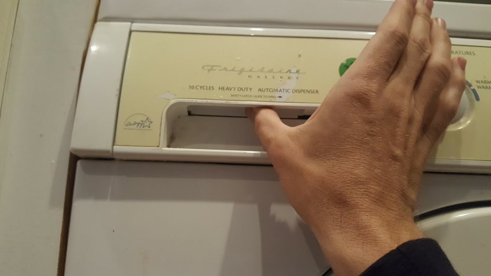
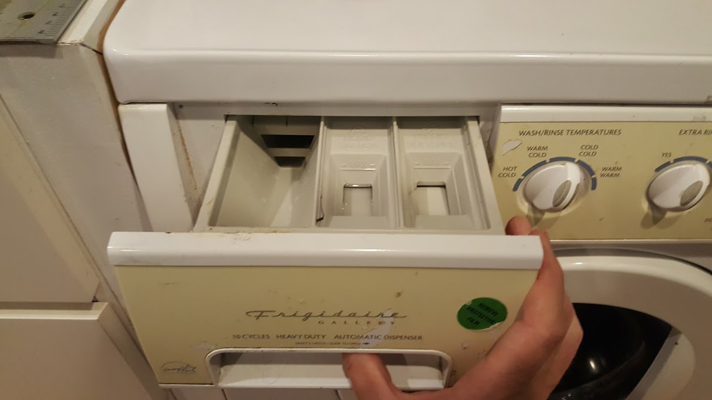

Open the soap drawer, pressing the hidden release lever to the right with your finger


Laundry detergent is in the top drawer to the left of the washing machine

Choose water temperature, cold if you think your colors could run

Pull out dial
Choose mode for your clothes (delicate or colors or whites)`
Rotate dial until it is pointing at one of the three "wash" settingDepress dialto begin the cycle